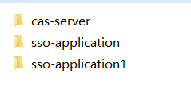
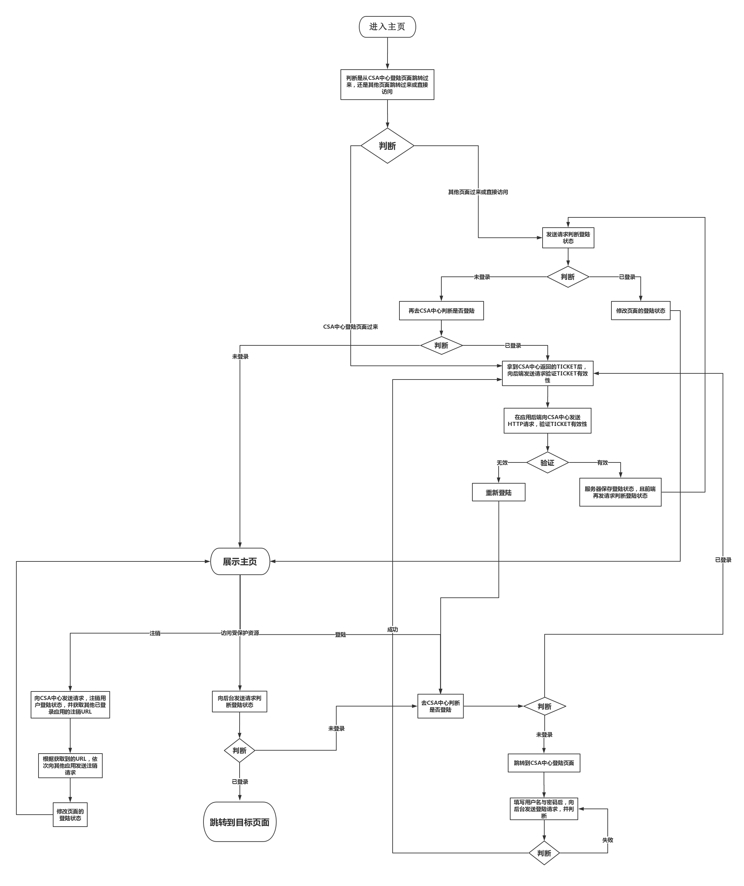

原文出处:本文由博客园博主接近风的地方提供。
原文连接:https://www.cnblogs.com/nearWind/p/11749060.html
原文连接:https://www.cnblogs.com/nearWind/p/11749060.html
单点登陆说明：在多个应用系统中，只需要登录一次，就可以访问其他相互信任的应用系统。
单点注销说明：在多个应用系统中，只需要注销一次，就可以注销其他相互信任的应用系统的用户登陆状态。
下图是标准单点登陆流程图：

单点登陆与单点注销具体实现：
1. 一共有三个相互独立的项目，cas-server；sso-application；sso-application1。其中cas-server只处理用户登陆与注销授权业务，其他项目则是各具体业务模块。
2. 采用前后端分离，各项目页面部署在nginx下，结构如，后端代码分别部署在3个tomcat上。
3. 所用技术：spring boot；mysql；redis；vue；axios。
4. 源码地址：https://github.com/nearWind/xuyuanyuan
实现流程图：

最后如有什么疑问，欢迎留言讨论！